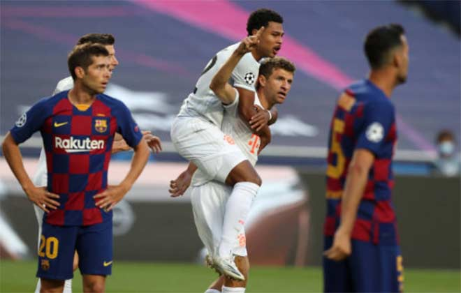
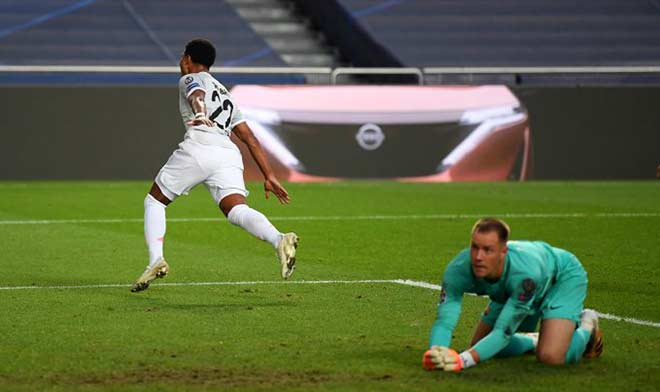
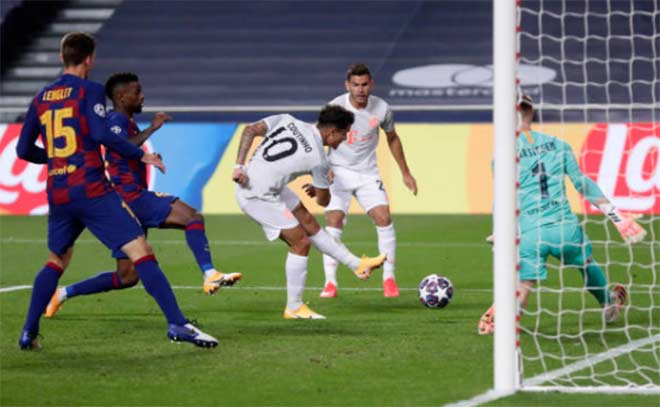

Barcelona chào đón sự trở lại của Sergio Busquets và Arturo Vidal sau án treo giò nhưng đẩy Antoine Griezmann lên ghế dự bị để sử dụng sơ đồ 4-4-2 với Messi và Suarez là cặp tiền đạo. Trong khi đó Bayern Munich đá 4-2-3-1 với cặp trung vệ Alaba - Boateng, trong khi Lewandowski ở vị trí tiền đạo cắm được yểm trợ bởi bộ ba Gnabry - Muller - Perisic.
Ít ai ngờ trận đấu lại có khởi đầu "bùng nổ" khi chỉ sau 4 phút Muller đã mở tỷ số sau khi tận dụng pha làm tường của Lewandowski ở chính diện cầu môn. Nhưng Barca gỡ hòa sau đó chỉ 3 phút khi Alaba trong lúc đối phó một quả căng ngang không có gì nguy hiểm của Alba lại đá phản rất vô duyên với cú sút vòng cung khiến Neuer bó tay.
Bayern tiếp tục hú vía những phút kế tiếp khi Neuer phải băng ra cản Suarez ở pha đối mặt và một quả tạt của Messi lại đưa bóng đập cột dọc. Lewandowski bỏ lỡ khá phí một pha đánh đầu chuyền của Muller với cú vô-lê vọt xà, và vài phút sau Messi sút trúng vị trí của Neuer sau khi một mình solo trước 3 cầu thủ Bayern.
Nhưng sau pha bóng đó là 10 phút thảm họa của Barca. Pha để mất bóng của Sergi Roberto vào chân Gnabry tạo cơ hội cho Bayern phản công nhanh và Perisic sút chéo góc hạ Ter Stegen ở phút 21. Đến phút 27, Goretzka đón đường chuyền từ giữa sân của Thiago với một cú hất bóng cực kỳ nghệ thuật đưa Gnabry thoát xuống hạ Ter Stegen. Và chỉ 4 phút sau Muller băng cắt đệm cận thành đưa Bayern dẫn 4-1 sau đường căng ngang của Kimmich.
Hàng thủ Barca tan nát và hàng công cũng không hơn khi họ không tạo được cơ hội nào đáng kể cho tới cuối hiệp 1 ngoài cú sút trúng Neuer trong thế bị gây sức ép của Suarez. HLV Setien quyết định rút Roberto để Griezmann vào sân, nhưng ngôi sao người Pháp mờ nhạt còn Suarez ít nhất mang lại hy vọng khi ghi bàn ở phút 57, đón đường chuyền của Alba và quặt qua Boateng để rút ngắn 2-4.
Nhưng đến phút 63, Davies có một pha bóng tuyệt đỉnh khi vượt qua 3 cầu thủ Barca, trong đó có pha 1-chọi-1 vượt qua Semedo không kém gì Ronaldinho, trước khi căng ngang cho Kimmich đệm cận thành. Ý chí thi đấu của Barca lúc này đã rệu rã và mọi thay đổi của họ đều vô tác dụng.
Cuối trận, Barca còn thêm nhục khi dự bị Coutinho được họ cho mượn đã trong vòng 6 phút sút tung lưới đội chủ quản 2 lần và kiến tạo cho Lewandowski ghi bàn, qua đó nhận trận thua đậm nhất trong lịch sử dự Champions League. Đại thắng 8-2, Bayern Munich tiến vào bán kết gặp đội thắng của trận Man City - Lyon sẽ diễn ra rạng sáng mai 16/8.
Hoa hoc (2H2 + O2 = 2H2O)
Toan hoc (ax2 + bx +c = 0)
1..Trăm năm trong cõi người ta, 2..Chữ tài chữ mệnh khéo là ghét nhau. 3..Trải qua một cuộc bể dâu, 4..Những điều trông thấy mà đau đớn lòng. 5.. Lạ gì bỉ sắc tư phong, 6..Trời xanh quen thói má hồng đánh ghen. 7..Cảo thơm lần giở trước đèn, 8..Phong tình có lục còn truyền sử xanh. 9,,Rằng năm Gia Tĩnh triều Minh, 10.. Bốn phương phẳng lặng, hai kinh vững vàng. 11..Có nhà viên ngoại họ Vương, 12..Gia tư nghĩ cũng thường thường bực trung. 13..Một trai con thứ rốt lòng, 14..Vương Quan là chữ, nối dòng nho gia.
Truyện Kiều
1..Trăm năm trong cõi người ta,
2..Chữ tài chữ mệnh khéo là ghét nhau.
3..Trải qua một cuộc bể dâu,
4..Những điều trông thấy mà đau đớn lòng.
5.. Lạ gì bỉ sắc tư phong,
6..Trời xanh quen thói má hồng đánh ghen.
7..Cảo thơm lần giở trước đèn,
8..Phong tình có lục còn truyền sử xanh.
9,,Rằng năm Gia Tĩnh triều Minh,
10.. Bốn phương phẳng lặng, hai kinh vững vàng.
11..Có nhà viên ngoại họ Vương,
12..Gia tư nghĩ cũng thường thường bực trung.
13..Một trai con thứ rốt lòng,
14..Vương Quan là chữ, nối dòng nho gia.
"When the door closed, another opens; but we often look so long and so regretfully upon the closed door that we do not see the one which has opened for us."
Alexander Grahambell